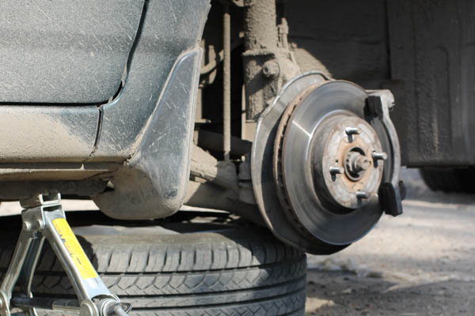
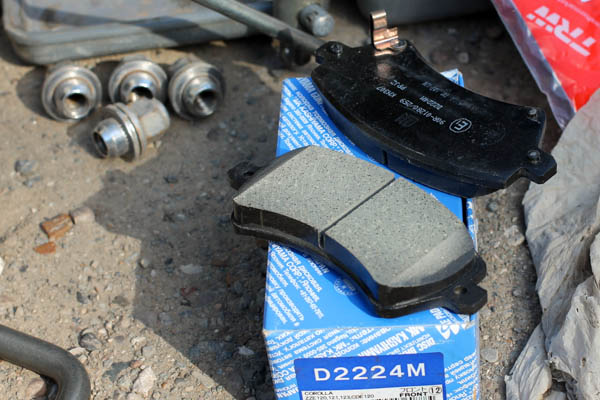
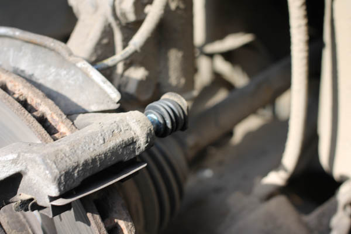
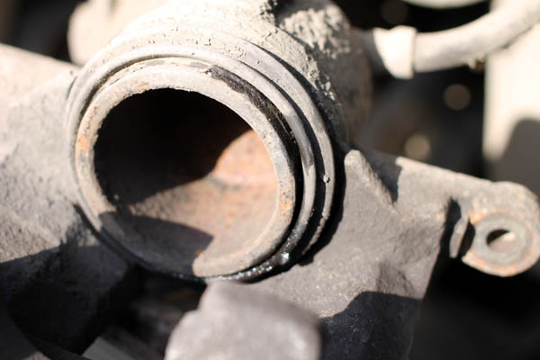

Toyota Corolla e120. Замена передних тормозных колодок, что выбрать?

Спереди появился нудный скрип, рождающийся во время торможения и умирающий после отпускания педали тормоза. Все это говорило об износе передних тормозных колодок. Что же, похоже, пришла пара сменить их на новые! Но, что выбрать? Оригинал или заменитель?
Выбор тормозных колодок Toyota Corolla e120
В интернете на форумах о Королле дискуссии по поводу выбора колодок разворачиваются на десятки страниц и сотни сообщений! Кто-то советует только оригинал, у кого-то дешевый «китай» не хуже оригинала. Проштудировав сотни сообщений я сделал не большой вывод. В соотношении цена/качество можно выделить три фирмы, которые следует ставить на Тойоту. Перечислю в порядке ухудшения качества.
Лично себе хотел купить тормозные колодки фирмы Akebono, но в наличии были только Kashiyama, да и продавец нахваливал их, якобы все таксисты берут, еще никто не жаловался. Ждать доставки десять дней не хотелось, старые колодки были съедены под ноль, решил рискнуть и проверить. Тем более цена, чуть — ли не в 2,5 раза ниже!

Вот они, не дорогие колодки Kashiyama для Короллы
Замена тормозных колодок Toyota Corolla e120
Менять колодки на Toyota Corolla e120 проще простого. Описывать, как это делать не вижу смысла, каких – либо тонкостей не вижу. Расскажу только о неприятных моментах, которые возникли у меня. Подробное описание замены тормозных колодок можно посмотреть в руководстве по обслуживанию Toyota Corolla e120. Единственное на, что обратил внимание во время замены тормозных колодок, так это на их неравномерный износ. С правой стороны колодки были сточены под ноль, а со стороны левого колеса, колодки могли проходить еще тысяч 10.
В сравнении с левой стороной, заметил повышенное сопротивление при перемещении суппорта относительно скобы. Эти две детали соединятся при помощи двух направляющих болтов. В них то и может и создаваться повышенное сопротивление по ряду причин. Решил разобрать, проверить наличие смазки, износ самих направляющих. В результате осмотра ничего подозрительного не увидел. Когда начал ставить, порвал один из пыльников направляющего болта (отвертка сорвалась прямо в резинку). Порванный пыльник направляющего болта оставлять нельзя, может повлечь за собой ряд серьезных последствий, вплоть до повреждения скобы.
В наличии пыльников не, оказалось, поэтому на время пришлось поставить не очень хорошую альтернативу — пыльник от ВАЗ 2109. Стоит он всего 30 рублей, ровно настолько же он и защищает направляющий болт. Тем временем, был заказан ремкомплект переднего суппорта, фирмы TRW, в состав которого входит полный набор для ремонта обоих суппортов. По отдельности пыльники направляющих болтов не продают! Стоимость ремкоплекта составляет 520 рублей. Оригинал в 1,5 раза дороже.
Пока шел ремкомплект, успела перегореть лампа ближнего света справа (пробег 111138). Разбирая суппорт в очередной раз, я не переставал удивляться сочетанию надежности конструкции с удобством обслуживания Toyota Corolla e120.
Ну, вот на этот раз все проверено, все запчасти и инструменты в наличии. Приступаю собственно к замене колодок. Первым делом меняю пыльник направляющего болта, смазываю его специальной смазкой LiquiMoly, заодно зачищаю и смазываю посадочные места колодок.

Направляющий болт суппорта с новым пыльником
Убираю тормозной поршень цилиндра до самого упора в суппорт (если поршень не убрать до конца, то новые колодки попросту не войдут), и на последних миллиметрах происходит конфуз — цилиндр «сикнул» тормозной жидкостью! Точно так же было и с другой стороны, в самом конце цилиндр пропустил немного жидкости наружу. Причина мне не понятна.

Пропустивший тормозную жидкость цилиндр суппорта
Пропустил, так пропустил, значит, будем прокачивать тормозную систему Короллы. Единственное, что тут стоить отметить, так это то, что не нужно бояться «проваливающейся» педали после прокачки. Если на нее сильно давить, то она медленно начинает уходить в пол, связано это с системой ABS (по крайней мере, так говорят «сервисмены»). Совет, перед заменой попробуйте сильно надавить на педаль тормоза и удерживать ее в этом положении, через некоторое время она медленно начнет уходить вниз. Потом не надо будет звонить друзьям, ездить по сервисам и часами гуглить, в поисках ответа на вопрос, — почему стала проваливается педаль тормоза после замены тормозных колодок.
P.S.: чтобы убедиться в том, что тормозная жидкость никуда не девается, я маркером поставил отметку на бочке тормозной жидкости и наблюдал за ней в течении нескольких недель.
Расход:
— Тормозные колодки Kashiyama – 550 рублей.
— Ремкоплект переднего суппорта TRW– 520 рублей.
— Смазка направляющих суппорта – 140 рублей.
— Лампочка ближнего света — «Маяк» 75 р. х 1 шт., 75 рублей.
— Пыльник ВАЗ 2109 – 30 рублей.
Итого: 1315 рублей.